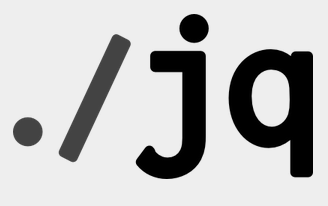
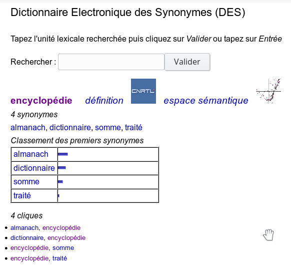
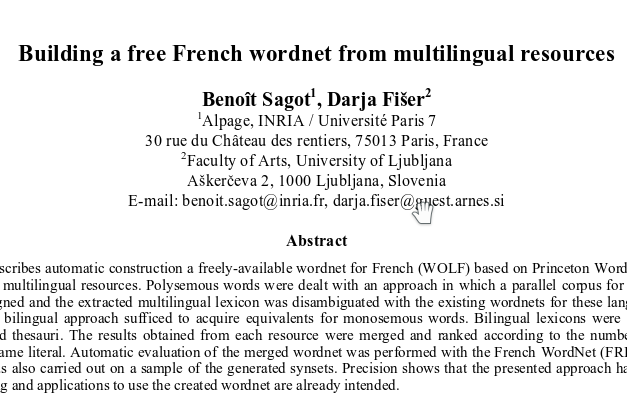
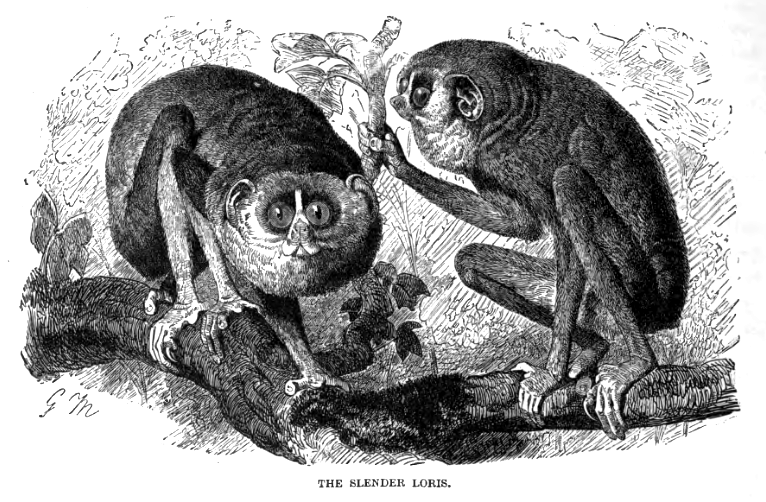
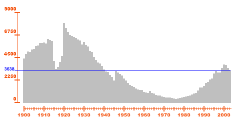
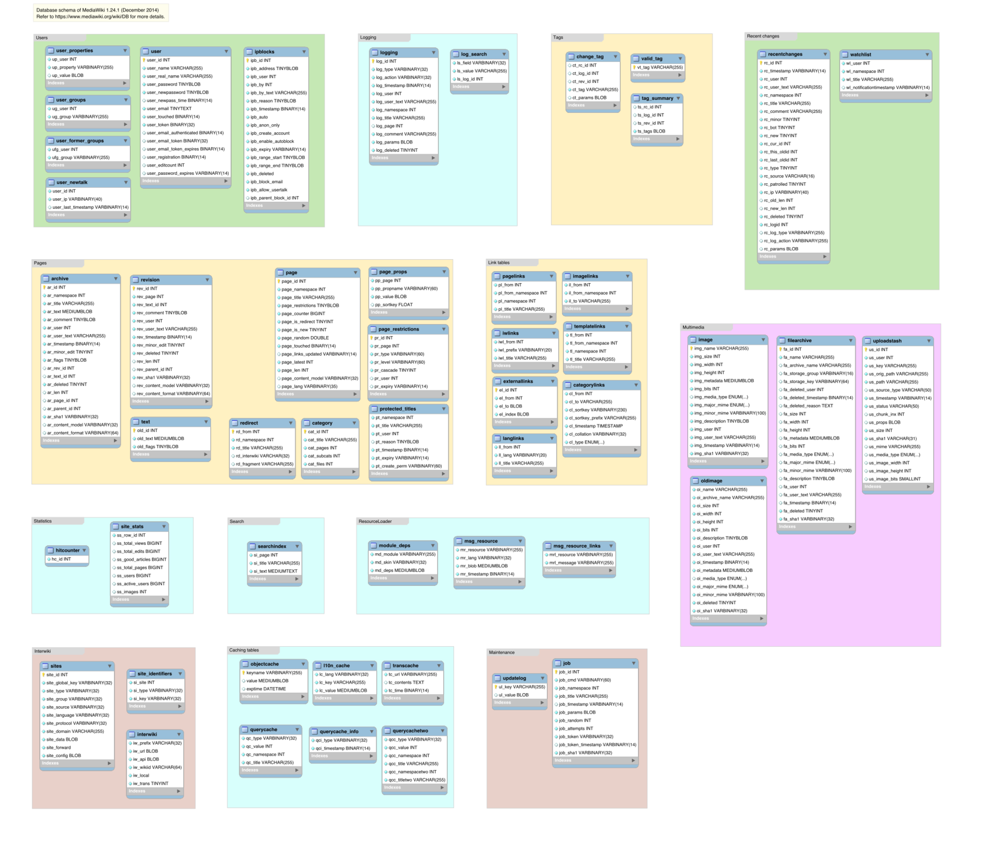
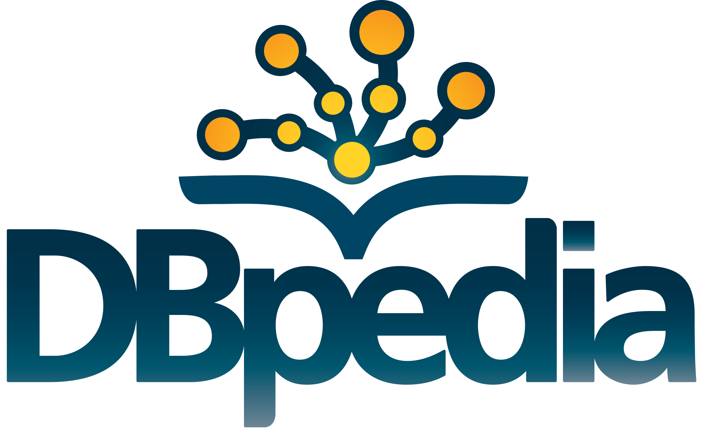

Datamining du dimanche sur les projets Wikimedia
© Niabot, CC-BY-SA 3.0
User:Arkanosis — WikiConvention francophone 2016
{kind=link}
Datamining ?
- Extraire (ou fouiller) des données
- … qui n'ont pas forcément été prévues pour ça
- … voire pas prévues du tout
© User:Arkanosis — CC-BY 4.0 — WikiConvention francophone 2016
À la main

© Günther Paalzow, Deutsches Bundesarchiv, CC-BY-SA 3.0
$ curl 'https://fr.wikipedia.org/wiki/ZAC_Pajol'
$ curl 'https://fr.wikipedia.org/wiki/ZAC_Pajol?action=render'
$ curl 'https://fr.wikipedia.org/wiki/ZAC_Pajol?action=raw'
$ curl 'https://fr.wikipedia.org/wiki/ZAC_Pajol?action=raw§ion=0'
© User:Arkanosis — CC-BY 4.0 — WikiConvention francophone 2016
curl & wget
{kind=link}
$ curl 'https://fr.wikipedia.org/wiki/ZAC_Pajol'
$ wget 'https://fr.wikipedia.org/wiki/ZAC_Pajol'
$ curl 'https://fr.wikipedia.org/wiki/ZAC_Pajol' -O
$ wget 'https://fr.wikipedia.org/wiki/ZAC_Pajol' -O -
- curl supporte (beaucoup) plus de protocoles
- wget supporte les téléchargement récursifs
- Même nombre de caractères…
- … mais on peut taper wget avec juste la main gauche ;-)
© User:Arkanosis — CC-BY 4.0 — WikiConvention francophone 2016
Les dumps
.jpg){kind=link}
- dumps.wikimedia.org
- dumps.wikimedia.org/frwiki/latest
- pages-meta-history : toutes les pages + historiques
- plusieurs Tio pour enwiki !
- pages-meta-current : toutes les pages, sans l'historique
- pages-articles : articles + modèles, sans l'historique
- ~ 15 Gio pour frwiki ; ~ 50 Gio pour enwiki
- stub-meta-history : seulement les métadonnées + historiques
- all-titles : seulement les titres
- *.rss : pour être prévenu des mises à jour
- pages-meta-history : toutes les pages + historiques
© User:Arkanosis — CC-BY 4.0 — WikiConvention francophone 2016
Les dumps
$ wget 'https://dumps.wikimedia.org/frwiki/latest/frwiki-latest-pages-articles.xml.bz2' -O - | \
bunzip2 > frwiki.xml
- Et pour du texte brut ?
$ wget 'https://dumps.wikimedia.org/other/cirrussearch/current/frwiki-20160815-cirrussearch-content.json.gz' -O - | \
gunzip > frwiki.json
$ < frwiki.json | jq '.source_text | select(. != null)'
$ < frwiki.json | jq -r '.text | select(. != null)'
$ wget 'https://dumps.wikimedia.org/other/cirrussearch/current/frwiki-20160815-cirrussearch-content.json.gz' -O - | \
gunzip | \
jq -r '.text | select(. != null)'
© User:Arkanosis — CC-BY 4.0 — WikiConvention francophone 2016
jq

© Stephen Dolan, CC-BY 3.0
- Filtrer, extraire, formater du JSON
jq '.'
jq '.[0]'
jq '.[] | { nom: .personne.nom, role: .role.nom }'
jq '.[] | length'
© User:Arkanosis — CC-BY 4.0 — WikiConvention francophone 2016
Synonymes : CRISCO DES

© ELSAP, CRISCO, Université de Caen Basse-Normandie
- www.crisco.unicaen.fr/des/
- 49 332 entrées
- 203 797 relations
- … classés par proximité, etc.
© User:Arkanosis — CC-BY 4.0 — WikiConvention francophone 2016
Synonymes : WOLF

© Benoît Sagot, Darja Fiser et al., INRIA, Cecill-C
- « Wordnet Libre du Français »
- gforge.inria.fr/projects/wolf/
$ wget 'https://gforge.inria.fr/frs/download.php/file/33496/wolf-1.0b4.xml.bz2' -O - | \
bunzip2 > wolf-1.0b4.xml
$ less wolf-1.0b4.xml
© User:Arkanosis — CC-BY 4.0 — WikiConvention francophone 2016
XMLStarlet
- Filtrer, extraire, formater du XML
- avec XPATH et XSLT
- mais sans XSLT
- avec XPATH et XSLT
xml sel -t -c root
xml sel -t -m '//foo' -v 'bar'
xml sel -t -m '//foo[@name!="bad"]' -v 'bar' -o " -> " -v 'baz'
xml sel -t -v 'cout(/)'
© User:Arkanosis — CC-BY 4.0 — WikiConvention francophone 2016
Synonymes : WOLF
$ < wolf-1.0b4.xml \
sed '2d' | \
xml sel -t \
-m '//SYNSET' \
-m 'SYNONYM[LITERAL!="_EMPTY_"]' \
-n \
-v LITERAL \
-n \
> /tmp/wolf-1.0b4.syn
$ less /tmp/wolf-1.0b4.syn
$ < wolf-1.0b4.xml \
sed '2d' | \
xml sel -t \
-m '//SYNSET' \
-m 'SYNONYM[LITERAL!="_EMPTY_"]' \
-v "count(LITERAL)" \
-n | \
grep -v '^[01]$' | \
> counts.lst
$ < counts.lst
datamash sum 1
62452
© User:Arkanosis — CC-BY 4.0 — WikiConvention francophone 2016
sed / awk

c̶ Richard Lydekker, DP
{kind=link}
- Filtrer, extraire, formater du texte
$ ( echo a a ; echo b b ; echo c c) | sed '2d'
$ ( echo a a ; echo b b ; echo c c) | awk 'NR != 2'
$ ( echo a a ; echo b b ; echo c c) | awk '/b/ { $1 = "A" } { print }'
$ echo "Hello toto" | sed 's/o/a/'
$ echo "Hello toto" | sed 's/o/a/g'
© User:Arkanosis — CC-BY 4.0 — WikiConvention francophone 2016
datamash

© Lorillou, CC-BY-SA 2.5
{kind=link}
- Calculs statistiques rapides
$ seq 10 | datamash sum 1 mean 1
55 5.5
$ datamash -s -g 13 count 2 < genes.txt
ABCC1 1
ABCC10 2
ABCC11 3
…
$ datamash -H mean 1 q1 1 median 1 q3 1 iqr 1 sstdev 1 jarque 1 < FILE.TXT
mean(x) q1(x) median(x) q3(x) iqr(x) sstdev(x) jarque(x)
45.32 23 37 61.5 38.5 30.4487 8.0113e-09
© User:Arkanosis — CC-BY 4.0 — WikiConvention francophone 2016
Synonymes : WOLF
En mathématiques, lorsqu'on choisit k objets parmi n objets discernables (numérotés de 1 à n) et que l’ordre dans lequel les objets sont placés (ou énumérés) n’a pas d’importance, on peut les représenter par un ensemble à k éléments. Les combinaisons servent donc, entre autres, en combinatoire.
#! /usr/bin/env python3
import math, sys
f = math.factorial
for line in sys.stdin:
count = int(line.rstrip())
print(f(count) / f(2) / f(count - 2))
$ < counts.lst
count_combinations.py | \
datamash sum 1
70039
- 62 452 entrées
- 70 039 relations
- … un peu en vrac, il faut avouer.
© User:Arkanosis — CC-BY 4.0 — WikiConvention francophone 2016
Synonymes : Wiktionnaire
© Contributeurs du wiktionnaire, CC-BY-SA 3.0
{kind=link}
- « Le dictionnaire libre »
$ wget 'https://dumps.wikimedia.org/frwiktionary/latest/frwiktionary-latest-pages-meta-current.xml.bz2' -O - | \
bunzip2 > frwikt-20160804.xml
$ less frwikt-20160804.xml
$ grep synonymes --color=always --after-context=15 frwikt-20160804.xml | head -n 30
© User:Arkanosis — CC-BY 4.0 — WikiConvention francophone 2016
grep
.jpg){kind=link}
- Filtrer du texte
$ echo foo | grep fo
$ echo foo | grep -v fo
$ echo wikimedia | grep wiki --color=always
grep hello --after-context=21
grep by --before-context=42
© User:Arkanosis — CC-BY 4.0 — WikiConvention francophone 2016
Synonymes : Wiktionnaire
#! /usr/bin/env python3
import xml.sax
class Page:
def __init__(self, ns, title, text):
self.ns = ns
self.title = title
self.text = text
class Handler(xml.sax.handler.ContentHandler):
def __init__(self, callback):
super().__init__()
self.__pageContent = {}
self.__currentTag = ''
self.__callback = callback
def startElement(self, name, attrs):
if name == 'page':
self.__pageContent = {}
self.__currentTag = name
def endElement(self, name):
if name == 'page':
self.__callback(Page(
int(''.join(self.__pageContent.get('ns', []))),
''.join(self.__pageContent.get('title', [])),
''.join(self.__pageContent.get('text', []))
))
self.__currentTag = ''
def __append(self, content):
self.__pageContent.setdefault(self.__currentTag, []).append(content)
characters = __append
ignorableWhiteSpace = __append
def parseWithCallback(inputFileName, callback):
parser = xml.sax.make_parser()
parser.setContentHandler(Handler(callback))
parser.parse(inputFileName)
def matchOn(string):
match = [None]
def on(reg):
match[0] = reg.search(string)
return match[0]
def _(group):
return match[0].group(group)
return on, _
def matchOnLines(text):
for line in text.split('\n'):
on, _ = matchOn(line)
yield line, on, _
© User:Arkanosis — CC-BY 4.0 — WikiConvention francophone 2016
Synonymes : Wiktionnaire
#! /usr/bin/env python3
import sys
import wikidump
def processPage(page):
print('=' * 80)
print(page.ns)
print(page.title)
print(page.text)
if __name__ == '__main__':
if len(sys.argv) != 2:
print('Usage: {} wikiDump.xml'.format(sys.argv[0].split(os.sep)[-1]))
sys.exit(1)
wikidump.parseWithCallback(sys.argv[1], processPage)
© User:Arkanosis — CC-BY 4.0 — WikiConvention francophone 2016
Synonymes : Wiktionnaire
#! /usr/bin/env python3
import re
import sys
import wikidump
_lang = re.compile(r'=+\s*\{\{langue\|(?P<lang>.+?)\}\}\s*=+')
_synonyms = re.compile(r'=+\s*\{\{S\|synonymes\}\}\s*=+')
_title = re.compile(r'^=+\s*=+')
_word = re.compile(r'^\*\s*\[\[(.+?\|)?(?P<word>.+?)\]\]')
def processPage(page):
if page.ns == 0:
keepWords = False
lang = 'fr'
for line, on, _ in wikidump.matchOnLines(page.text):
if on(_synonyms):
keepWords = True
elif on(_lang):
lang = _('lang')
elif on(_title):
keepWords = False
if keepWords and lang == 'fr' and on(_word):
print(page.title + ' → ', _('word'))
if __name__ == '__main__':
if len(sys.argv) != 2:
print('Usage: {} wikiDump.xml'.format(sys.argv[0].split(os.sep)[-1]))
sys.exit(1)
wikidump.parseWithCallback(sys.argv[1], processPage)
© User:Arkanosis — CC-BY 4.0 — WikiConvention francophone 2016
Synonymes : Wiktionnaire
#! /usr/bin/env python3
import re
import sys
import wikidump
_lang = re.compile(r'=+\s*\{\{langue\|(?P<lang>.+?)\}\}\s*=+')
_synonyms = re.compile(r'=+\s*\{\{S\|synonymes\}\}\s*=+')
_title = re.compile(r'^=+\s*=+')
_word = re.compile(r'^\*\s*\[\[(.+?\|)?(?P<word>.+?)\]\]')
words = set()
relations = set()
def processPage(page):
if page.ns == 0:
keepWords = False
lang = 'fr'
for line, on, _ in wikidump.matchOnLines(page.text):
if on(_synonyms):
keepWords = True
elif on(_lang):
lang = _('lang')
elif on(_title):
keepWords = False
if keepWords and lang == 'fr' and on(_word):
words.add(page.title)
words.add(_('word'))
relations.add(tuple(sorted([page.title, _('word')])))
if __name__ == '__main__':
if len(sys.argv) != 2:
print('Usage: {} wikiDump.xml'.format(sys.argv[0].split(os.sep)[-1]))
sys.exit(1)
wikidump.parseWithCallback(sys.argv[1], processPage)
print('words', len(words))
print('relations', len(relations))
© User:Arkanosis — CC-BY 4.0 — WikiConvention francophone 2016
Synonymes : Wiktionnaire
$ ./extract_synonyms.py frwikt.xml | head -n 25
accueil → home
accueil → main page
accueil → page d’accueil
siège → cul
siège → derrière
siège → fondement
siège → blocus
meuble → garniture
meuble → mobilier
militaire → martial
militaire → guerrier
militaire → soldat
militaire → trouffion
militaire → bidasse
militaire → chair à canon
militaire → fantassin
militaire → gendarme
militaire → mercenaire
militaire → milicien
manchot → unibrassiste
manchot → manchois
manchot → unibrassiste
bande dessinée → art
bande dessinée → bédé
bande dessinée → illustré
$ ./count_synonyms.py frwikt-20160804.xml
words 67449
relations 61562
./count_synonyms.py frwikt.xml 279,07s user 1,08s system 99% cpu 4:40,26 total
- 67 449 entrées
- 61 562 relations
- … de qualité franchement acceptable.
© User:Arkanosis — CC-BY 4.0 — WikiConvention francophone 2016
Synonymes : comparaison
| DES | WOLF | Wiktionnaire | |
|---|---|---|---|
| Entrées | 49 332 | 62 452 | 67 449 |
| Relations | 203 797 | 70 039 | 61 562 |
| Qualité | Exceptionnelle | Perfectible | Très bonne |
| Effort | « l’INALF […] le laboratoire ELSAP […] le CRISCO […] depuis 1994, un important travail […] la collaboration des utilisateurs […] davantage de moyens humains » | « Sagot et Fišer 2008a, Sagot et Fišer 2008b, Fišer et Sagot 2008 […] Sagot, Fort et Venant 2009a, Sagot, Fort et Venant 2009b […] Sagot et Fišer 2011, Sagot et Fišer 2012a […] Gábor et al. 2012 […] Apidianaki et Sagot, 2012 […] Hanoka et Sagot 2012 […] Sagot et Fišer, 2012b » | Quelques dizaines de minutes … et le travail de quelques milliers de contributeurs :) |
© User:Arkanosis — CC-BY 4.0 — WikiConvention francophone 2016
Statistiques
… et le travail de quelques milliers de contributeurs :)— Arkanosis, 21 août 2016
- Oui, mais combien ?
- [[Spécial:Statistiques]]
- Mmh…
- [[Spécial:Liste_des_utilisateurs]]
$ curl 'https://fr.wiktionary.org/w/api.php?action=query&list=allusers&auwitheditsonly=true&format=json'
$ http 'https://fr.wiktionary.org/w/api.php' \
action==query \
list==allusers \
auwitheditsonly==true \
format==json
© User:Arkanosis — CC-BY 4.0 — WikiConvention francophone 2016
Statistiques : API
$ from=''
count=0
while true; do
echo $count $from
users=$(http 'https://fr.wiktionary.org/w/api.php' \
action==query \
list==allusers \
auwitheditsonly==true \
aufrom==$from \
aulimit==500 \
format==json)
from=$(echo $users | jq -r '.continue.aufrom')
[[ $from = null ]] && break
count=$((count + 500))
done
count=$((count + $(echo $users | jq '.query.allusers | length')))
echo $count
© User:Arkanosis — CC-BY 4.0 — WikiConvention francophone 2016
Statistiques : API
$ time (
from=''
count=0
while true; do
echo $count $from
users=$(http 'https://fr.wiktionary.org/w/api.php' \
action==query \
list==allusers \
auwitheditsonly==true \
aufrom==$from \
aulimit==500 \
format==json)
from=$(echo $users | jq -r '.continue.aufrom')
[[ $from = null ]] && break
count=$((count + 500))
done
count=$((count + $(echo $users | jq '.query.allusers | length')))
echo $count
)
© User:Arkanosis — CC-BY 4.0 — WikiConvention francophone 2016
Statistiques : API
$ time (
from=''
count=0
while true; do
echo $count $from
users=$(http 'https://fr.wiktionary.org/w/api.php' \
action==query \
list==allusers \
auwitheditsonly==true \
aufrom==$from \
aulimit==500 \
format==json)
from=$(echo $users | jq -r '.continue.aufrom')
[[ $from = null ]] && break
count=$((count + 500))
done
count=$((count + $(echo $users | jq '.query.allusers | length')))
echo $count
)
0
500 Alf.68
1000 Astrée
1500 Bibliocaser
2000 Carnby
2500 Copyrightdl
3000 Dicolinguiste
3500 Elsewhere
4000 Florent45
4500 Ghuysmans99
5000 Hendumaica
5500 Jack Merridew
6000 Josie92
6500 Kronf
7000 Linotte13
7500 ManuelBrereton
8000 Michka B
8500 NatouB
9000 Oratyon
9500 PhoebeBCQ
10000 Rantatero
10500 Saka876
11000 Snipre
11500 TcheBTchev
12000 Tyseria
12500 Wikiwoordfanaat
13000 Zoorin
13162
4,83s user 0,58s system 41% cpu 13,170 total
© User:Arkanosis — CC-BY 4.0 — WikiConvention francophone 2016
Statistiques : SQL
… et le travail de quelques milliers de contributeurs :)— Arkanosis, 21 août 2016
- Oui, mais combien ?
- 13162 !
- Peut-on aller plus vite ?
- Enter… Wikimedia Tool Labs
ssh login.tools.wmflabs.org # Enter Wikimedia Tool Labs
$ become artlist
$ sql frwiktionary
© User:Arkanosis — CC-BY 4.0 — WikiConvention francophone 2016
Statistiques : SQL
MariaDB [frwiktionary_p]> SELECT COUNT(*) FROM user WHERE user_editcount > 0;
+----------+
| COUNT(*) |
+----------+
| 13170 |
+----------+
1 row in set (0.09 sec)
- Conclusion 1 : on peut aller plus vite
- Conclusion 2 : choisir le bon outil :)
- Malheureusement, on n'a pas toujours le choix…
© User:Arkanosis — CC-BY 4.0 — WikiConvention francophone 2016
Réplicats des bases de données (Tool Labs)

© Krinkle, CC-BY-SA 3.0
{kind=link}
© User:Arkanosis — CC-BY 4.0 — WikiConvention francophone 2016
Réplicats des bases de données (Tool Labs)
- Nombre de contributions dans un espace de nom donné
SELECT page_title, COUNT(*)
FROM revision_userindex
JOIN page
ON page_id = rev_page
JOIN user
ON user_id = rev_user
WHERE user_name = 'Arktest'
AND page_namespace = 4
GROUP BY page_title
ORDER BY COUNT(*) DESC
LIMIT 30;
© User:Arkanosis — CC-BY 4.0 — WikiConvention francophone 2016
DBpedia

c̶ The DBpedia Team, DP
{kind=link}
PREFIX db-owl: <http://dbpedia.org/ontology/>
SELECT * WHERE {
?ville db-owl:region <http://fr.dbpedia.org/resource/Île-de-France> .
?ville rdf:type db-owl:Settlement .
?ville db-owl:populationTotal ?population .
FILTER (?population > 100000)
}
© User:Arkanosis — CC-BY 4.0 — WikiConvention francophone 2016
Wikidata
{kind=link}
PREFIX wd: <http://www.wikidata.org/entity/>
PREFIX wdt: <http://www.wikidata.org/prop/direct/>
SELECT ?pays WHERE {
wd:Q90 wdt:P1376 ?pays
}
SELECT ?eyeColorLabel (COUNT(?person) AS ?count)
WHERE {
?person wdt:P1340 ?eyeColor
SERVICE wikibase:label { bd:serviceParam wikibase:language "fr" }
}
GROUP BY ?eyeColorLabel
© User:Arkanosis — CC-BY 4.0 — WikiConvention francophone 2016
Service rapide
© Brendan Dennis, CC-BY-SA 3.0
{kind=link}
SELECT ?countryLabel ?itu ?iso2 ?iso3 ?pop ?sup ?gdp
WHERE {
?country wdt:P474 ?itu ;
wdt:P297 ?iso2 ;
wdt:P298 ?iso3 ;
wdt:P1082 ?pop ;
wdt:P2046 ?sup ;
wdt:P2131 ?gdp .
SERVICE wikibase:label { bd:serviceParam wikibase:language "fr" }
}
ORDER BY ASC(?countryLabel)
© User:Arkanosis — CC-BY 4.0 — WikiConvention francophone 2016
~~~~
{kind=link}
- frwp.org/User:Arkanosis
- jroquet@arkanosis.net
- @Arkanosis freenode, GitHub, Twitter…